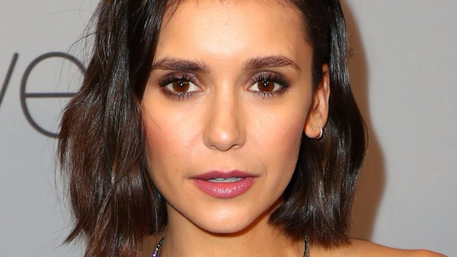

Logan Wade Lerman as Charlie Kelmeckis: Logan Wade Lerman (born January 19, 1992) is an American actor, known for playing the title role in the fantasy-adventure Percy Jackson films. He appeared in commercials in the mid-1990s, before starring in the series Jack & Bobby (2004–2005) and the movies The Butterfly Effect (2004) and Hoot (2006). Lerman gained further recognition for his roles in the western 3:10 to Yuma, the thriller The Number 23, the comedy Meet Bill, and 2009's Gamer and My One and Only. He subsequently played d'Artagnan in 2011's The Three Musketeers, starred in the coming-of-age dramas The Perks of Being a Wallflower (2012), Indignation (2016) and The Vanishing of Sidney Hall (2017), and had major roles in the 2014 films Noah and Fury.
Emma Watson as Sam: Emma Charlotte Duerre Watson (born 15 April 1990) is an English actress, model, and activist. Born in Paris and brought up in Oxfordshire, Watson attended the Dragon School and trained as an actress at the Oxford branch of Stagecoach Theatre Arts. As a child artist, she rose to prominence after landing her first professional acting role as Hermione Granger in the Harry Potter film series, having acted only in school plays previously. Watson appeared in all eight Harry Potter films from 2001 to 2011, earning worldwide fame, critical accolades, and around $60 million. Watson continued to work outside of the Harry Potter films, appearing in the 2007 television adaptation of the novel Ballet Shoes and lending her voice to The Tale of Despereaux (2008). Following the last Harry Potter film, she took on starring and supporting roles in My Week with Marilyn (2011), The Perks of Being a Wallflower (2012) and The Bling Ring (2013), made an appearance as an exaggerated version of herself in This Is the End (2013), and portrayed the title character's adopted daughter in Noah (2014). In 2017, she starred as Belle in a live-action adaptation of the musical romantic fantasy film Beauty and the Beast. Her other roles include Regression (2015), Colonia (2015) and The Circle (2017).
Ezra Miller as Patrick: Ezra Matthew Miller (born September 30, 1992) is an American actor and singer. Miller's feature film debut was in Afterschool (2008). Miller starred as Kevin in the drama We Need to Talk About Kevin (2011) and co-starred in the film adaptation of The Perks of Being a Wallflower (2012). In 2015, Miller co-starred in the drama The Stanford Prison Experiment and the comedy Trainwreck. Miller played Credence Barebone in the Fantastic Beasts films Fantastic Beasts and Where to Find Them (2016) and Fantastic Beasts: The Crimes of Grindelwald (2018). Miller portrayed Barry Allen / The Flash in the DC Extended Universe, first in a cameo in Batman v Superman: Dawn of Justice (2016) and in a cameo in Suicide Squad (2016), and later as a lead in Justice League (2017).
 Nina Dobrev as Candace Kelmeckis: Nikolina Konstantinova Dobreva (born January 9, 1989[3]), known professionally as Nina Dobrev is a Canadian actress. Her first acting role was as Mia Jones in the drama series Degrassi: The Next Generation. She later became known for portraying Elena Gilbert and Katherine Pierce, along with two other characters on The CW's supernatural drama series The Vampire Diaries. Dobrev has also appeared in several feature films, including the 2012 coming-of-age drama The Perks of Being a Wallflower, the 2014 action comedy Let's Be Cops, the 2015 horror comedy The Final Girls, the 2017 action thriller XXX: Return of Xander Cage, and the 2017 science-fiction drama Flatliners.